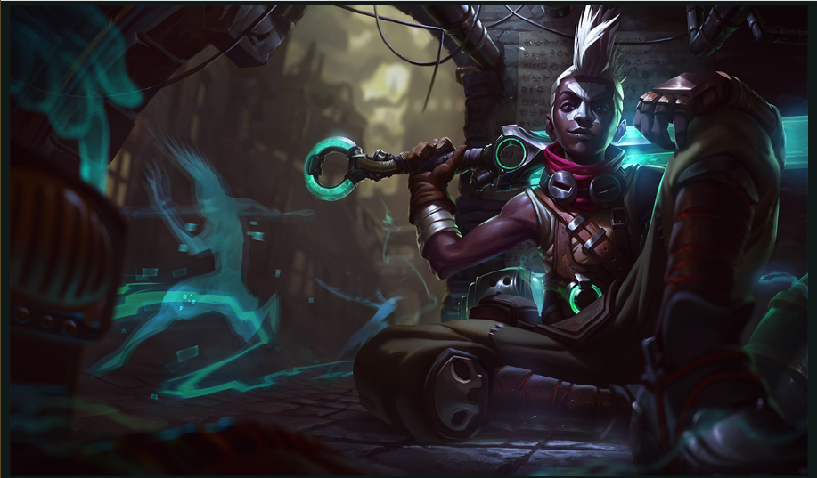

상대가 성장형 정글일 때 에코를 픽한다면 안정적으로 성장이 가능하고 한타 때 뛰어난 어그로핑퐁과 파괴력을 보여준다

같은 유닛에게 3번 연속으로 스킬이나 기본 공격을 맞히면 발동되는 효과. 중간에 다른 대상을 공격해도 기존에 쌓은 중첩에는 영향이 없고, 기본 공격과 스킬으로 모두 중첩을 쌓을 수 있는 점에서는 집시로드의 또다른 작품인 찌그러뜨리기나 슝슝과 유사하다. 공격을 받을 때마다 대상에게는 "공명"이라는 더미 버프가 쌓인다. 시각적으로 중첩 현황이 확실히 보이기 때문에 굳이 이를 통해 확인할 필요는 없지만, 중첩이 사라지기까지 얼마나 남았는지 정도는 더미 버프를 이용하여 쉽게 확인할 수 있다. 기본 피해량이 최대 140까지 올라가고 주문력 계수 0.8 덕분에 아이템에 의한 성장성도 꽤 준수하기에, 암살자로서 에코의 딜링을 완성시킨다고 할 수 있는 효과다. W에는 딜이 없고, R은 딜이 매우 높지만 그만큼 맞히기 아주 힘들고 보통 생존용으로 쓰기 때문에 패시브딜 없이는 에코의 데미지는 거의 서포터급으로 주저앉는다. 단순히 스킬, 평타 아무거나 3번 맞혀서 0.8 AP나 되는 피해를 줄 수 있는 패시브가 얼마나 강력한지 체감이 될 것이다. 에코는 원하는 목표물을 어렵지 않게 물 수 있는 챔피언이기에 시간의 톱니바퀴가 빗나가지 않는 이상 Z 드라이브 공진을 큰 어려움 없이 발동시킬 수 있다. 기본 공격 또는 스킬로 피해를 입힐 때 동시에 터지는 효과라서 상대가 딜 계산을 하기는 까다로운 편. Z 드라이브 공진처럼 3번째 공격에 적용되는 감전 등과 함께 발동될 경우 상당히 강력하다. 적 챔피언을 대상으로 효과를 발동시킬 경우 에코에게 "빼앗긴 시간"이라는 이름의 이동 속도 버프가 추가로 주어진다. 1레벨부터 2초 동안 50%, 16레벨 이후에는 3초간 80%의 추가 이동 속도를 제공하는 강력한 효과다. 에코의 다른 스킬들과 더불어 에코의 추적 및 도주 능력을 향상시키는 요인이 되며, 스킬 사이클을 한 번 돌리고 빼는 에코 특유의 딜교환을 가능하게 만드는 요인이기도 하다. 정글 몬스터를 대상으로는 피해량이 50% 증가하여 최대 600의 피해를 입히기에 정글링 또는 더티 파밍 시 꽤 강력한 딜 스킬로 써먹을 수 있다. 이 이속 버프는 중첩되지 않기에 2명 이상의 챔피언을 대상으로 동시에 발동시키더라도 수치는 동일하며, 대신 연속적으로 발동시킬 경우 지속 시간을 초기화시키는 것은 가능하다. 효과가 발동되어 추가 피해를 입은 적에게는 "안정화" 효과가 적용되어 5초 동안 패시브 발동의 대상이 되지 않는다. 이 때문에 1:1 전투에서 지속딜을 뽑는 용도로는 적합하지 않다. 많은 3타 계열 스킬이 중첩 갱신에 재사용 대기시간을 필요로 하지 않아서, 챔피언의 DPS에 핵심적인 기여를 하는 것과는 퍽 대조적이다. 그래서 에코는 오래 엉켜서 싸우는 타입은 아니다. 일반적인 3타 발동형 스킬에서 찾아보기 힘든 이동 속도 증가 효과를 이용해서 3번째 공격으로 치명적 타격을 입혔다면 추격하여 마무리를 짓고, 아니면 뒤로 빠져서 더 이상의 딜교환을 피하는 식으로 운영하는 것이 기본.